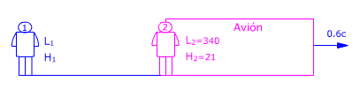
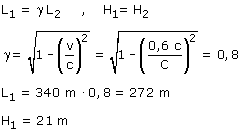

a)

Observador 1 (Suelo): Ve al avión moviéndose con velocidad 0.6c. Midiendo sus dimensiones obtiene: L1, H1
Observador 2 (Avión) Ve el avión quieto. Midiendo sus dimensiones obtiene: L2 = 340 m, H2 = 21 m. Estas dimensiones son propias
Aplicando la conversión de longitudes resulta:

El observador 1 ve el avión más corto de lo que lo ve el observador 2 y con la misma altura